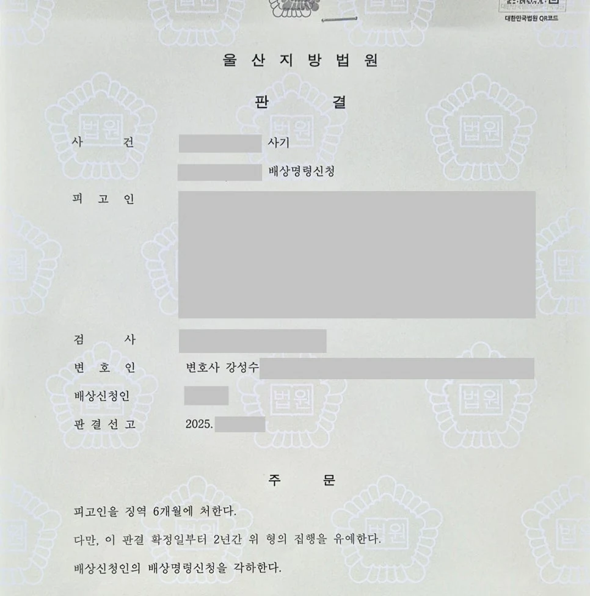

핵심 결과
사기 사건 상담에서 가장 많이 나오는 말이 있습니다.
“처음부터 속이려던 것은 아니었습니다.”
물론 억울한 마음이 있을 수 있습니다.
하지만 형사재판은 마음만으로 판단되지 않습니다.
재판부는 수사기록, 돈의 흐름, 당시 대화, 변제 가능성, 사건 이후 태도를 함께 봅니다.
이번 사건도 처음에는 혐의를 전면 부인하던 사건이었습니다.
그러나 기록상 계속 부인만 하면 실형 가능성이 컸습니다.
법무법인 우린은 전략을 현실적으로 바꾸어 피해 회복, 합의, 선처 탄원을 중심으로 대응했고, 최종적으로 집행유예를 이끌어냈습니다.
| 구분 | 내용 |
|---|---|
| 사건 분야 | 사기 |
| 초기 상황 | 의뢰인이 혐의를 전면 부인 |
| 주요 위험 | 동종 전과, 피해 회복 없음, 편취 고의 인정 가능성 |
| 핵심 쟁점 | 무죄 주장 지속 여부와 형량 방어 전환 시점 |
| 주요 대응 | 증거 분석, 피해 회복, 피해자 합의, 선처 탄원서 확보 |
| 최종 결과 | 집행유예 |
사건 개요
의뢰인은 처음 상담 당시 사기 혐의를 강하게 부인하고 있었습니다.
“처음부터 속일 생각은 없었다.”
“상황이 좋아지면 반드시 갚으려고 했다.”
이렇게 설명했습니다.
하지만 수사기록을 확인해 보니 상황은 단순하지 않았습니다.
돈을 빌릴 당시의 자금 상태, 피해자와 나눈 대화, 이후 변제 과정, 사건 이후 대응을 종합하면 재판부가 편취의 고의를 인정할 가능성이 높았습니다.
여기서 편취의 고의란 처음부터 갚을 능력이나 의사 없이 상대방을 속여 돈을 받은 것으로 볼 수 있는 상태를 말합니다.
실형 위험이 컸던 이유
- 의뢰인은 수사 초기부터 혐의를 전면 부인하고 있었습니다.
- 과거 비슷한 동종 전과가 있었습니다.
- 피해 금액이 가볍지 않았습니다.
- 피해 회복이 전혀 이루어지지 않은 상태였습니다.
- 기록상 편취 고의가 인정될 가능성이 높았습니다.
이 상황에서 계속 “억울하다”는 주장만 반복하면, 재판부에는 반성 없는 태도로 보일 수 있었습니다.
사기 사건에서 무조건 부인이 위험한 이유
사기 사건은 단순히 “속일 마음이 없었다”고 말한다고 해결되지 않습니다.
재판부는 말보다 기록을 봅니다.
특히 아래 자료들이 중요하게 작용합니다.
| 판단 자료 | 재판부가 보는 부분 |
|---|---|
| 돈의 흐름 | 돈을 받은 뒤 어디에 사용했는지 |
| 당시 대화 | 돈을 빌릴 때 어떤 설명을 했는지 |
| 변제 능력 | 당시 실제로 갚을 능력이 있었는지 |
| 사건 이후 태도 | 연락 회피, 일부 변제, 사과 여부 |
| 피해 회복 | 피해자가 실제로 얼마를 회복했는지 |
억울한 부분이 있더라도 기록상 불리한 증거가 쌓여 있다면 전략을 바꿔야 합니다.
무죄를 끝까지 다툴 사건인지, 실형을 막는 방향으로 전환해야 할 사건인지를 빠르게 판단해야 합니다.
해결 전략
1. 증거 구조를 먼저 냉정하게 분석했습니다
의뢰인에게 듣기 좋은 말만 할 수는 없었습니다.
현재 기록상 재판부가 사건을 어떻게 볼 가능성이 높은지 설명했습니다.
무작정 부인을 계속하면 오히려 실형 가능성이 커질 수 있다는 점도 분명히 안내했습니다.
2. 무죄 주장보다 형량 방어로 방향을 전환했습니다
이번 사건은 무죄만 주장하기에는 위험했습니다.
그래서 핵심 목표를 바꿨습니다.
“처벌을 피하겠다”가 아니라 실형을 막고 집행유예 가능성을 높이는 방향으로 전략을 다시 세웠습니다.
3. 피해 회복과 합의를 우선했습니다
사기 사건에서 피해 회복은 매우 중요합니다.
피해자에게 단순히 합의를 요구한 것이 아닙니다.
피해금 상당 부분을 회복하고, 사건에 대한 사과와 향후 변제 의사를 구체적으로 전달했습니다.
그 결과 피해자의 처벌불원 의사와 선처 탄원서를 확보할 수 있었습니다.
| 대응 단계 | 실제 진행 내용 |
|---|---|
| 1단계 | 수사기록과 증거자료 분석 |
| 2단계 | 편취 고의 인정 가능성 검토 |
| 3단계 | 무죄 주장 유지의 위험성 설명 |
| 4단계 | 피해 회복 및 합의 전략 수립 |
| 5단계 | 처벌불원 의사와 선처 탄원서 확보 |
| 6단계 | 재판부에 집행유예가 필요한 사정 정리 |
결과
재판부의 시선은 처음과 달라졌습니다.
의뢰인은 자신의 잘못을 인정하고 반성하는 태도를 보였습니다.
피해 회복도 이루어졌습니다.
피해자 역시 선처를 바란다는 의사를 밝혔습니다.
그 결과 실형 위험이 컸던 사건은 집행유예로 마무리되었습니다.
최종 결과
사기 혐의를 계속 부인하다 실형 가능성이 컸던 사건에서, 피해 회복과 합의 자료를 정리해 집행유예를 이끌어냈습니다.
의뢰인은 구속을 피하고 일상으로 돌아갈 수 있었습니다.
사기 사건에서 중요한 것은 전략입니다
사기 사건은 목소리를 높인다고 이기는 사건이 아닙니다.
현재 내 손에 있는 증거가 무엇인지 봐야 합니다.
무죄를 다툴 수 있는 사건인지, 아니면 형량 방어가 더 현실적인 사건인지 판단해야 합니다.
그 판단이 늦어지면 피해자 합의도 어려워지고, 재판부의 인상도 나빠질 수 있습니다.
특히 동종 전과가 있거나 피해 회복이 전혀 안 된 사건이라면 초기 방향 설정이 더 중요합니다.
결론
사기 혐의가 억울하게 느껴질 수 있습니다.
하지만 기록상 불리한 증거가 많다면 대응 방향을 달리해야 합니다.
무작정 부인하는 것이 항상 좋은 전략은 아닙니다.
때로는 인정할 부분은 인정하고, 피해 회복과 양형자료를 집중적으로 준비하는 것이 실형을 막는 더 현실적인 방법이 될 수 있습니다.
사무장·상담실장 없이 변호사가 직접 상담합니다
사기 사건은 초기 판단이 중요합니다.
법무법인 우린은 사건 기록 검토, 피해자 합의, 재판 대응까지 변호사가 직접 진행합니다.
듣기 좋은 말만 하지 않습니다.
현재 증거 구조에서 어떤 대응이 가장 현실적인지 직접 확인하고 설명드리겠습니다.
이 글은 일반적인 법률 정보 제공을 위한 자료이며, 개별 사건의 결과를 보장하지 않습니다. 구체적인 대응은 사실관계와 증거에 따라 달라질 수 있습니다.